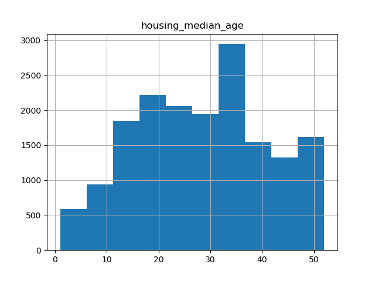

这个是学习tensorflow前的准备，
pandas 是一种列存数据分析 API。它是用于处理和分析输入数据的强大工具，很多机器学习框架都支持将 pandas 数据结构作为输入。 虽然全方位介绍 pandas API 会占据很长篇幅，但它的核心概念非常简单，我们会在下文中进行说明。有关更完整的参考，请访问 pandas 文档网站，其中包含丰富的文档和教程资源。
基本概念
导入pandas 并输出版本1
2
3from __future__ import print_function
import pandas as pd
print(pd.__version__)
0.23.4
pandas中的主要数据结构被时限为一下两类：
DataFrame： 一个关系型数据表格，其中包含多行和已命名的列，就像excel一样
Series：它是单独的一列，DataFrame中包含一个或多个Series，每个Series都有一个名称。就像我们写个表格在第一列写上每一行代表什么一样。
数据框架是用于数据操控的一种常用抽象实现形式，spark中的rdd，数据库中的table 类似。
创建Series的一种方法是构建Series对象。列入：1
pd.Series(['Beijing', 'Shanghai', 'Shenzhen'])
你可以将映射string列名称的dict传递到它们各自的Series，从而创建DataFrame对象。如果Series在长度上不一致，系统会用特殊的NA值填充缺失的值。
1 | city_names = pd.Series(['Beijing', 'Shanghai', 'Shenzhen']) |
1 | City name Population |
大多数情况下，我们需要把整个文件加载到DataFrame中，下面我们加载一个包含加利福尼亚州住房的数据文件。并创建特征定义，通过head方法浏览DataFrame前几个纪录
1 | california_housing_dataframe = pd.read_csv("https://download.mlcc.google.cn/mledu-datasets/california_housing_train.csv", sep=",") |
1 | longitude latitude ... median_income median_house_value |
pandas的另一个强大的功能是绘图制表，借助DataFrame.hist，可以快速了解一个列中值的分布。pandas使用的画图库是matplotlib所以我们也可以使用这个库中的方法来操作图表。
1 | import matplotlib.pyplot as plt |

访问数据
可以使用 dict 或list 的方法来访问DataFrame数据1
2
3
4
5
6
7
8
9cities = pd.DataFrame({'City name': city_names, 'Population': population})
print(type(cities['City name']))
print(cities['City name'])
print(type(cities['City name'][1]))
print(cities['City name'][1])
print(type(cities[0:2]))
print(cities[0:2])
1 | <class 'pandas.core.series.Series'> |
操控数据
可以向series应用Python的基本用算指令。1
2
3
4population / 1000
0 21534.678
1 23541.023
2 120.456
NumPy是一个用于科学计算的常用工具包。pandas series可作用大多数NumPy函数的参数。1
2
3
4
5
6
7import numpy as np
np.log(population)
0 13.655892
1 13.831172
2 13.092314
dtype: float64
对于更加复杂的单列转换，可以使用Series.apply。像Python映射函数一样，Series.apply将以参数形式接受lambda函数，而该函数会应用与每个值，下面的例子是创建一个population是否超过一定数值的series。
1 | print(population.apply(lambda val: val > 1000000)) |
DataFrames的修改方式也非常简单。例如，一下代码向现有的DataFrame添加了两个Series。1
2
3
4
5
6
7
8cities['Area square miles'] = pd.Series([98.87, 176.53, 46.92]) # 随便写的数
cities['Population density'] = cities['Population'] / cities['Area square miles']
print(cities)
City name ... Population density
0 Beijing ... 217808.010519
1 Shanghai ... 133354.234408
2 Shenzhen ... 2567.263427
练习1
通过添加一个新的布尔值列，修改cities表格
城市以sh开头
城市面积大于50 （上面数都是我随便写的）
注意：布尔值 Series 1 辑与时，应使用 &，而不是 and。1
2
3
4
5
6
7
8
9
10cities['Is wide and has Sh name'] = (cities['Area square miles'] > 50) & cities['City name'].apply(lambda name: name.startswith('Sh'))
print(cities)
City name ... Is wide and has Sh name
0 Beijing ... False
1 Shanghai ... True
2 Shenzhen ... False
[3 rows x 5 columns]
索引
Series和DataFrame对象也定义了index属性，改属性向每个Series项或DataFrame行赋一个标识符值。默认情况下，在构造时，pandas会赋可反应数据源数据顺序的索引值。索引值在创建后时稳定的；也就是说，他们不会因为数据重新排序而发生改变。
1 | print(city_names.index) |
练习2
reindex方法允许使用未包含在原始DataFrame索引值中的索引值。请示一下，看看如果使用此类值会发生什么。
如果reindex输入数组包含原始DataFrame索引值中没有的值，reindex会为此类“丢失的”索引添加新行，并在所有对应列中填充NaN值
1 | cities.reindex([0,4,5,2]) |
这种行为是可取的，因为索引通常是从实际数据中提取的字符串，在这种情况下，如果容许出现“丢失的”索引，将可以轻松的使用外部列表重建索引，因为我们不必担心将输入清理掉。